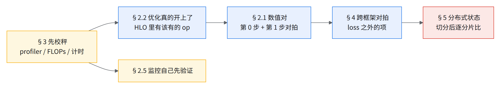
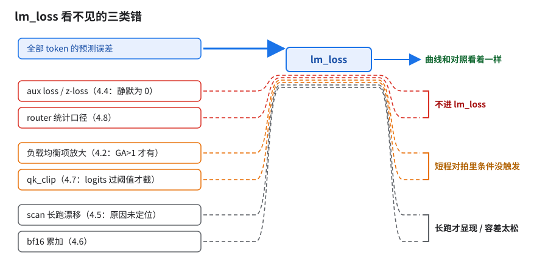
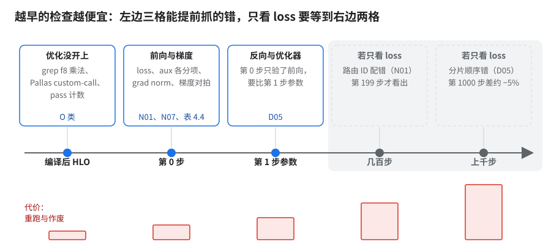

13 · 静默错误总表：跑通了，不等于对了
要解决的问题：跑通、不报错、loss 看着正常，结果却是错的，或者优化根本没生效。这类错怎么分类、每类最便宜怎么抓、上线前查什么？01–12 章里的静默错误收在 §2 一张总表里，另有几条是本章新增的。
按什么顺序查（左边不过，右边的结论都不能信；「先校秤再谈快慢」是硬顺序，其余先后是本章的建议排法）：

- 静默错误＝跑通、不报错、loss 看着正常，但结果是错的，或者优化根本没生效。不打断训练就没人查；查到时前面几周的 A/B 往往都要重做。
- 最贵的不是 bug 本身，是它污染的那批结论：FP8 配方静默退回 BF16 时，期间所有 A/B 都作废（04 §9）；两个「快约 50%」「快约 40%」其实一个算错、一个梯度全 0（02 §3 的 WARN）。
- 先校秤，再看数：profiler 会悄悄丢 trace、FLOPs 公式会走错分支、异步计时会把一步的秒数记到别的步上。秤不准时，所有「快了 / 慢了」都不能信（§3）。
- 跨框架对拍抓到的问题，大多 loss 看不出来：初始化尺度差几倍、aux loss 恒为 0、qk_clip 从没触发过，曲线都和对照「看着差不多」（§4）。
- 分布式状态的错最难抓：第 0 步逐位一致，之后单调漂；1000 步后才差到约 −5%（§5）。
- 约 1/7 的优化项涉及静默错误 [推断：按类别粗估，非逐项标注]
- 一整段 FP8 A/B 因静默退回 BF16 作废；所有修复都意味着之前的 A/B 要重做
- 第 199 步 路由 ID 配错，loss 才差到能看出来的程度（13.658 vs 13.547）
- 第 0 步逐位一致 → 第 1000 步差约 −5% 联合 all-gather 反向的分片顺序错
- 约 27 倍 scan 模式下 z-loss 被算成 0 前后的差（lm_loss 逐位一致）
- 22 倍 scan 与 unscan 对 Megatron 的平均偏差之比（小模型，900 步）
- 0 → 几十万 修 profiler 选项前后，每个设备 plane 上的事件数
1.为什么静默错误是 MoE 大规模训练的头号成本
它们不报错，只改数，要等有人拿两个数对不上去追，往往晚几周才被发现。MoE 大规模训练特别容易出，四个原因叠在一起：
- 开关多，生效路径多。同一个 FP8 配方要经过配置校验、模型构建、量化注入、AOT 编译、运行时读取五处，任一处用了不同的判断（
==对startswith、正则对模块路径），就会静默退回 BF16（04 §9）。 - AOT 和运行时是两个进程。AOT 是在 CPU 机器上提前把程序编好存成 pickle，TPU 上的训练进程只加载它，所以编译端和训练端读的不是同一份配置，flag、LR、remat 策略可以各说各话，而 pickle 名字里不带这些（06 §8）。
- MoE 的错常常只影响少数专家或少数 device。路由 ID 配错、scale 按形状推断错、CP 下 bias 各 device 各算各的，平均到全局 loss 上不到 1%，要几百步才看得出。
- loss 是最不灵敏的指标。好几类错根本不进 lm_loss（§4 末图）。
为什么：错的东西要么根本不进 lm_loss，要么只占一小部分、被平均掉，曲线照样往下走。前一条有实测（§4 表 4.4）；后一条（只错部分专家／token、被全 token 平均稀释）本书没有实测案例 [推断]。所以兜底退回要改成直接报错，并在产物上验：HLO 里有 f8 乘法、该生效的计数大于 0。
把握：推断 · 出处：本书 §4 的数据；稀释那条未实测，判据是故意只弄坏一个专家，看 lm_loss 偏差多少步后才超出噪声
💡判据「意外的大收益」先默认是静默错误：查 HLO 里有没有该有的 op、loss 对不对、计时口径变没变（02 章两个大加速、04 章因 FP8 静默退回而作废的 A/B 都是这么来的）。
2.总表
按症状分五组。「怎么抓」一列只写最便宜的那个检测手段；能 grep 的不跑实验，能看第 0 步的不跑一千步。编号供 §6 和别章引用。
2.1 数值错（结果错，但跑得下去）
| # | 症状 | 根因 | 怎么抓 | 详见 |
|---|---|---|---|---|
| N01 | loss 比对照高一点点，几百步后才分开 | MoE permute() 出来的权重按 token 排序（token-major），专家 ID 按专家排序（expert-major），两列顺序不同却按位置直接配对，routed 梯度送错专家 |
拿 unfused 路径跑同一 batch，比第 0 步梯度 | 05 §9.1 fused MoE 调参陷阱 |
| N02 | 路由偏斜时 loss 偏 | 路由 scratch 按「平均每专家多少 token」定容量，热点专家写出界、覆盖相邻专家的数据 | 构造偏斜路由的单测，比 unfused 路径 | 05 §9.1 fused MoE 调参陷阱 |
| N03 | 某些形状下梯度出 NaN；tile 扫描里最快的那组参数 | GMM v2 尾部 tile 读到越界数据；ragged 输出有未初始化的行；扫描只看耗时，最快的候选恰是 NaN | 用不整除 tile 的形状跑单测；扫描脚本加数值校验，NaN 直接淘汰 | 05 §10 |
| N04 | FP8 反向梯度偏，只在某些切分下 | _gmm_bwd 按形状推断 scale 归属，每个 device 只有一个本地专家时大部分行用错 scale |
单专家 / 多专家两种切分各跑一次，比梯度 | 04 §4.1 五道锁 |
| N05 | FP8 下所有专家用同一个 scale | megablox 路径只取第 0 个专家的 scale | 打印各专家 scale，看是否全等 | 04 §4.1 五道锁 |
| N06 | FP8 blockwise 反向在大 tile 下错 | tgmm 的子块循环次数用了 K 方向 tile 而不是 M 方向 | tile 跨 128 两侧各跑一次对拍 | 10 §6 末「别章已展开」→ 04 §2.1 blockwise 一节 |
| N07 | 梯度范数大了几个数量级，loss 还在降 | vocab tiling 反向漏乘上游 cotangent（raw_grad_norm 约 675K，正确约 0.36） |
看第 0 步 grad norm 的量级 | 06 §6 |
| N08 | MTP loss 只有一半，或恒为 0 | Flax sow 用 APPEND 累加了两份；上游 nnx.pop 覆盖掉 MTP 的值 |
单独打印 MTP loss，和手算比 | 06 §6 |
| N09 | Muon 更新幅度偏 | Newton-Schulz 在 bf16 里算；MLA 投影按块正交化的分块配置填成了每头维度，按错的块正交化；一处性能改动顺带改了默认 dtype | 关 Muon 批量路径对拍单步更新 | 06 §5 |
| N10 | KDA 层输出和参考差一截 | 短卷积少了翻转；beta 默认没过 sigmoid；gated RMSNorm 实际没开 | 逐层对拍 KDA 输出，先看第 0 步 | 05 §1 |
| N11 | 长 packed 序列上 KDA 输出偏 | 超过 25 个 segment 的部分被置零；varlen 状态在文档间泄漏 | 构造 >25 段的样本单测 | 12 §5.1 |
| N12 | SwiGLU clip 边界上梯度只剩一半 | jnp.clip 在恰好等于边界的点回传 1/2 梯度，参考实现回传全部；clip 作用的层范围也配错 |
对边界点做数值梯度检查 | 12 §5.1 |
| N13 | 多片上数值偶发错 | split-AR 把静态切片改写成 RS，并把 iota replica group 读成整张 mesh | 开、关 HLO 通信重排各跑一步比 loss | 02 §7 HLO 通信重排一节 |
| N14 | 跨迭代预取读到下一代数据 | 跨迭代双缓冲读成第 j+1 代；DCN AR 合并时丢了 ISSUE 归属 | 对重排后的 HLO 做依赖检查 | 03 §11 私有 DCN pass 一节 |
| N15 | 「快约 50%」「快约 40%」 | megablox 忽略 weight_gather_axes（loss 5.98）；a2a CP 路径无条件 stop_gradient，KDA 梯度全 0 |
加速超出预期就先看 loss 和梯度范数 | 02 §3 的 WARN |
| N16 | MLA 对拍有一点点系统偏差；换到 GPU 路径偏差更大 | Splash 把 scale（含 YaRN mscale）乘在 query、用 base2 指数，Megatron 乘在 logits、用 e 指数。修法：scale 作 logits scale 传 kernel、关 base2；改后 1000 步 loss 差约 −0.001% | 逐条 attention 路径数「scale 乘了几次」，应恰好一次；第 0 步比 logits。坑：GPU cuDNN 路径缩了两次，CI 覆盖不到 | 12 §5.3 |
2.2 优化静默不生效（开了，但没开上）
| # | 症状 | 根因 | 怎么抓 | 详见 |
|---|---|---|---|---|
| O01 | 开了 FP8 不快；配置校验通过，运行时不是那个配方 | 校验写 == "fp8_full"，运行时用 startswith，二者不一致时 blockwise GMM 静默走 BF16 |
grep f8e4m3fn 编译后 HLO |
04 §9 |
| O02 | AOT 出来的整个程序是 BF16；首尾层 BF16 开关没效果 | AOT 路径跳过 maybe_quantize_model；首尾层 BF16 三键是空操作 |
查 AOT 产物 HLO 里各层的 dtype | 04 §9 |
| O03 | 开了 QAG 通信没减半 | 条件不满足时 QAG 静默跳过；scan 里 Qwix 路径匹配不上 | 看 all-gather 的 dtype 是否为 FP8 | 04 §9 |
| O04 | 某个模块没被量化 | 量化规则用正则匹配模块路径，路径一变就静默跳过 | 打印量化规则命中的模块清单；再按模块数编译后 HLO 里的 f8 乘法，和应量化清单对账（04 §9.1） | 11 A08 |
| O05 | HLO 通信重排没生效 | AOT 编译时没带 HLO 通信重排配置，重排全部静默跳过 | 看 pass 的计数器输出，0 就是没跑 | 02 §7 HLO 通信重排一节 |
| O06 | 两阶段 RS 开了没效果 | 拆分段被 placement 的 192 MiB 大小阈值过滤，选中 0 对 | 同上，看被选中的数量 | 02 §7 HLO 通信重排一节 |
| O07 | 调好的 kernel 配置没上生产 | 查找表没同步，生产走默认 | 在训练里打印实际用的 tile | 05 §9.1 fused MoE 调参陷阱 |
| O08 | CPU AOT 出来的程序慢 2–3% | 漏设 kernel 库的目标平台环境变量，走了 JAX 参考实现 | 在 HLO 里找 Pallas custom-call | 05 §1 |
| O09 | remat 策略改了，显存不变 | 残差名字和 checkpoint_name 对不上（kda_residuals、GLA 线性注意力层） |
改前改后比编译期 temp，相同就是没生效 | 11 C03 |
| O10 | EP=1 时某个专家侧优化无效 | 依赖 EP 维的优化（如 RoE）在 EP=1 时是空操作 | 读代码确认生效条件 | 本章新增 |
| O11 | 训练端和编译端的 flag 不一样 | flag 只在 AOT 里设；pickle 名不含 remat / Muon；没有指纹；LR 被烤进 HLO | 给 AOT 产物加配置指纹，加载时比对 | 06 §8 |
| O12 | 删掉一个 CLI 键表示「关」，两边读到不同值 | 编译端回落到 base.yml，训练端读别的配置 | 显式写 quantization=，不要靠删键 |
09 §4.6 |
| O13 | 升 libtpu 后 Muon 数值变了 | 新版本改了 NS 的数值行为 | 升级前后跑同一步对拍 | 06 §5 |
| O14 | 升 kernel 库 pin，loss 对齐但慢约 7 倍 | 新版本性能回退，loss 检查放过 | 升 pin 时 loss 和步时一起看 | 05 §3 |
| O15 | yml 里开了 gated attention，checkpoint 里也有 g_proj 权重，却不报错 |
MLA 构造函数漏传门控注意力类型键：配置写按头门控，实际不门控；g_proj 被加载、前向从不用 |
权重里有、前向没用到：查每个加载参数在不在前向图里（或梯度恒 0）；按配置项 grep 构造函数有没有传下去 | 11 附：静默接线坑 |
| O16 | 新模型的 MoE 负载均衡指标、expert counts 一直没有，训练照跑 | 训练入口三处写死旧模型枚举，新模型不在名单里，整段静默跳过（§4 表 4.4 是路径名找不到，这条是枚举分支没进去） | 全仓 grep 旧模型枚举名，逐处问新模型该不该进；指标为空时报错不跳过 | 11 附：静默接线坑 |
| O17 | 高 GA（梯度累加步数）下 AOT 编译 OOM，GA=1 时放得下 | 先 RS 再累加 ＝ 先累加再 RS，XLA 据此把专家权重梯度（dW）的 RS 挪到 GA 循环外，于是 GA 循环里累加的梯度从切好的一份变成整份未切分的。修法：dW 的 RS 后插 optimization barrier（对应一个防梯度 RS 上提的开关，默认关，本书未验证，未收进 11 清单） | 比 GA=1 与 GA>1 的编译期 temp，猛涨就查 RS 外提。坑见表下注 | 11 B05（B05 收进的是前向权重 AG 外提；这条反向 dW RS 外提是它的姊妹开关，11 清单在 B05 条下判为不收） |
| O18 | placement pass 摆放效果不如预期，不报错 | 在嵌套的完全外提 1→1 链里找不到上一个 stage 的 producer，搜索悄悄退化成只看下一个 stage 那一段 | 给 pass 加「搜索区实际覆盖了哪些段」的日志 / 回归测试，覆盖嵌套外提链 | 02 §7 HLO 通信重排一节 |
| O19 | 开了 FP8，MTP 层还是 BF16 | Qwix scope 前缀传不过 ToNNX 边界、外加递归深度上限（O04 之外第二个原因）；改法：前缀跨 ToNNX 传播、去掉深度上限 |
打印命中模块清单，确认 MTP 层在里面；查 HLO 里 MTP 那段的 dtype | 04 §9 |
- O17 的坑：仅专家按 FSDP 切且走 QAG / 强制 gather 时生效，否则静默无效；两阶段 AG、megablox 非 tokamax 分支不受保护；与 batch_split 互斥（同开报错）；GA>1 数值未对拍。
2.3 量法错（秤不准）
| # | 症状 | 根因 | 怎么抓 | 详见 |
|---|---|---|---|---|
| M01 | 第 1 步只要几秒；存档那步算出物理上不可能的 TFLOP/s | 异步派发：日志里的步时是 N−2 步的；异步存档的秒数溢出到相邻步 | 加一次 block_until_ready 对照；存档步单独标记、剔出统计 |
01 §3、§3.3 |
| M02 | 打开 dumper 后慢了约 5% | dumper 强制同步 | 测速时关掉所有 dumper | 07 §1.1 |
| M03 | MFU 偏低或 >100% | FLOPs 公式走错分支（KDA 走成 GQA）；上一代模型 TFLOP/s 虚高 4–6 倍 | 手算一层 FLOPs 对公式输出 | 01 §3 |
| M04 | MFU 高了约 12% | 分母用了旧口径的 1028.75，不是 1153.5（1153.5 ÷ 1028.75 ≈ 1.12）；芯片与 device 混用 | 分母只写一处，标明是每 device | 01 §3 |
| M05 | trace 里没有设备事件 | ProfileOptions 默认把设备 tracer 关了 | 看 trace 文件大小，看设备 plane 事件数 | §3.1 |
| M06 | 抓 profile 的那几步特别慢 | profiler 自己造成慢步 | 慢步对照「是否在抓 profile」 | 09 §2.1 |
| M07 | 整段 MoE GMM 的耗时被算到 Shared Expert 上 | Pallas 外层 scope 丢失、source_stack 被污染，按源码位置归错 |
按编译后 tf_op scope 归因 |
01 §3 |
| M08 | 编译期 temp 说放得下，实机 OOM；HBM 读数超过 94.74 GiB | temp 只是初筛，和实机峰值能差好几 GiB，两个方向都有；max_utils 报的是「逻辑」用量 |
终判看实机 peakBytesInUse |
06 §10.1 |
| M09 | 显存估算偏低 | 估算器把 6 种 FP8 dtype 算成 0 字节 | 估算结果和编译期 temp 对一下 | 02 §7 HLO 通信重排一节 |
| M10 | 微基准赢了，训练里反而慢 | 微基准没设 DVFS p_state，差 8% | 微基准和训练用同一套环境变量 | 05 §9.1 fused MoE 调参陷阱 |
| M11 | 「这次改动快了不到 1%」 | 单次噪声可达 ±5%；同机成对跑后差值仍 <1% 的，不下结论 | 同机成对跑，报中位数 | 09 §1.2 |
| M12 | 对拍差超过门槛 | GPU 自己重跑的差就是门槛的两倍；有符号均值和 MARE 混用 | 先量对照自身的重跑差 | 12 §6 |
| M13 | 「DCN 利用率 99%」 | 分子分母口径不同 | 不引用这个数 | 03 §16.2 |
| M14 | 逐层 dump 开了却没东西；没开 dump 的训练启动变慢 | ① 编译路径无条件 jax.clear_caches()，拖慢启动；② 初始化晚于编译，守卫读到「未开」，dump 静默失效；③ callback 要 ordered=True |
开 / 关 dump 各跑一次，数层数、比启动时间；回归测试先改坏代码确认会红 | 12 §5 |
| M15 | CI 一直只报一个失败，修完又冒一个 | CI 用 pytest -x，第一个失败就停，后面积累的 20 个单测失败（优化器注册缺失、并行度断言、NS 批量化等）全被挡在后面 |
CI 不用 -x，跑全量、报失败总数 |
本章新增 |
2.4 数据与状态
| # | 症状 | 根因 | 怎么抓 | 详见 |
|---|---|---|---|---|
| D01 | loss 归一化的分母时对时错 | total_weights 有竞争（perm∘perm） |
同一 batch 跑两遍比分母 | 07 §1.1 |
| D02 | 开 CP 后样本悄悄变少 | per-device batch < 1 加 CP 时，发起 ID 对不上、样本被永久丢弃 | 数每步实际消费的样本数 | 07 §1.1 |
| D03 | 恢复后数据重复或跳过 | 检查点不存数据迭代器；状态绑死 host 数；samples 模式差一 | 恢复前后各打印下一个样本 ID | 07 §2 |
| D04 | CP 下 routed bias 各 device 不一致 | expert_counts 的 psum 少了 context 轴；ring 路径漏 psum | 各 device 打印 bias 的标准差 | 11 B04 |
| D05 | CP / 联合 all-gather 下第 0 步对、之后慢慢漂 | 线性注意力状态在 CP 分片边界断开；反向 reduce-scatter 的分片顺序错，梯度落到别的 device | 见 §5 | §5 |
| D06 | 作业退出码 0，训练其实没跑完 | 异常路径也走正常退出 | 以最后一个检查点步数判定 | 07 §8 |
| D07 | 硬件算错，loss 不报警 | 硬件静默算错（SDC）；检查器只查 ICI / DCN，且自身改数值约 1e-4 | 定期跑同输入对拍 | 07 §9 |
| D08 | 同一个镜像标签，代码不一样 | :latest 被特性分支覆盖 |
用 digest 不用标签 | 10 §11.5 |
| D09 | MTC 恢复时千级 peer 一起干等 300 s，日志里没有致命错误 | 注册 coordinator 的 PUT 遇 http2 断连，replicator 不重试不上报；shutdown barrier 与 restore 超时赛跑；absl 把 CRITICAL 当 VLOG 吞掉。修法：注册加重试、shutdown 超时参数化、修日志级别 | 恢复阶段找日志里的长时间空白；目标规模上做一次断连注入 | 07 §6.2 及其后「20+ 片一次」 |
| D10 | （安全）代码仓库令牌出现在日志里 | 启动脚本把令牌拼进 git config URL，前面开着 set -x，令牌随命令回显进日志 |
在日志里搜令牌前缀。修法：令牌走 credential helper 或 Secret 挂载，不进命令行；令牌必须轮换，否则泄出的那份仍有效 | 11 附：静默接线坑 表后的 DANGER 块 |
2.5 监控假报
| # | 症状 | 根因 | 怎么抓 | 详见 |
|---|---|---|---|---|
| W01 | router 统计 TPU 比 GPU 低 90% 多，loss 只差零点几 | 统计在 sigmoid＋bias 后的分数上又做了一次 softmax | 先确认两边统计的定义 | §4 表 4.8 |
| W02 | aux 指标随 GA 放大 | 指标没除以 GA 步数 | 改 GA 前后比指标 | §4 表 4.2 |
| W03 | 逐层统计突然全没了 | 采集器按参数路径名找，路径一改就找不到，不报错 | 采集器找不到时报错 | §4 表 4.4 |
| W04 | nightly 显示「已取消」，其实成功了 | 轮询脚本吞了凭证过期的错误；真正的 FAIL 也一起丢了 | 轮询失败单独报警 | 07 §8 |
| W05 | 步时偏差监控一直不响 | uploader 的启停没接上配置（开关打开了也不生效） | 故意注入一个慢步验证 | 10 §11.3 |
| W06 | TensorBoard 曲线停了，进程 0 存档后变慢 | TensorBoard region 写死在另一区，跨区 copyTo 30 s 超时返回 503，uploader 反复重启 | 监控上传进程重启次数；TensorBoard 与训练同 region | 07 §4（候选根因 ②） |
| W07 | 部分 pod 的 goodput 指标没写 | 文件名冲突阻塞写入，约一成 pod 受影响 | 数实际写指标的 pod 数 | 07 §8 |
| W08 | FP8 精度门禁一直绿 | 硬门禁没接上，有限值的发散也算通过；格式名拼错静默变成 e5m2 | 故意喂一个坏 run 看门禁响不响 | 10 §6.4 |
| W09 | 对拍脚本说通过 | 比较白名单放过了该比的字段 | 抽查白名单 | 本章新增 |
| W10 | 注入的 kill 被报成芯片故障 | 故障分类按现象不按来源 | 对照注入日志 | 07 §13 |
| W11 | goodput 报 44%，实际 37%；disruption 次数和 step 数一样多 | goodput 库两个 worker 进程共用一个 cache 文件，threading.Lock 管不到跨进程，每条记录写两遍 |
disruption 数 ≈ step 数即重复记账；拿日志手算一次对照。修法：分开 cache_dir 或关 step deviation（该 API 已弃用） |
本章新增 |
| W12 | HBM 不可纠正错误（UE）告警从来不响，真出了 UE 也不响 | 告警指标的关联键（主机名）和实际不一致，查不到序列、读数恒为 0；指标管道大规模下也取不全 | 每个告警指标交付前用已知坏机或注入验证一次「看不看得见」；读数恒为 0 的指标当作不存在 | 本章新增 |
| W13 | 节点明明坏了，平台一直报 HEALTHY | 健康状态只说明节点活着：限频、致命 ICI link 后 all-reduce 慢十几倍 / 约 25% 都报 HEALTHY；GKE 状态晚好几小时；MegaScale 挂住没同步到节点标签 | 按片跑 collective / GEMM / HBM 微基准，慢了 cordon 二分；按节点筛，不信池标签 | 08 附：别信 HEALTHY |
五组分布：数值错 16、优化不生效 19、量法错 15、数据与状态 10（含一条安全）、监控假报 13。
⚠️「本章新增」那几行在 01–12 章基本没展开例外：O10 在 10 §3.1 有一张概要卡。
3.先校秤三件套
3.1 profiler 悄悄丢掉设备 trace
- 现象：trace 能抓，文件也能打开，但只有 host 侧事件。修之前 trace 约 1.7 MB，修之后约 42 MB。
- 为什么错：
ProfileOptions把device_tracer_level设成 0，设备 tracer 整个没开。修后每个设备 plane 事件数从 0 变成几十万，SparseCore plane 从 0 变成二十万上下。修之前所有「SparseCore 上没活」「设备空闲」的读法都是看错了。 - 怎么校：抓完先看两样——文件大小和设备 plane 的事件数。是 0 就是 tracer 没开，不是设备闲。
3.2 FLOPs 公式走错分支
- 现象：MFU 偏低，而且看不出原因。
- 为什么错：KDA 层落进 GQA 分支、按 softmax 注意力算；修后 chunk 内块求逆仍没计入（漏项细节见 08 开头 WARN）。反方向是上一代模型 TFLOP/s 虚高 4–6 倍、MFU >100%（01 §3）。
- 怎么校：手算一层的 FLOPs，和公式输出比。MFU >100% 或比同类模型低一大截，先怀疑分子，再怀疑分母（每芯片还是每 device）。
3.3 异步计时把秒数记到别的步上
- 现象一：第 1 步日志显示的秒数只有实际的约 1/43（上一代模型，32 芯片）。日志里的
seconds是 N−2 步的。 - 现象二：存档阻塞的秒数溢出到相邻几步，算出物理上不可能的 TFLOP/s（07 §3）。
- 为什么错：JAX 异步派发，见下图。
- 怎么校：步尾加一次
block_until_ready对照；存档步剔出统计；测速关 dumper（M02）。

比两个括号：只有下排量到的等于真实步时（示意）。
✅三件套的共同点都不需要跑新实验。看文件大小、手算一层、加一行同步——几分钟就能做完，而每一个都推翻过一批结论。
4.跨框架对拍清单
同模型同数据在本书的 MaxText 实现和 Megatron 上对跑，下面八条都是这样抓到的「两边都不报错、但不一样」。
| # | 差异 | 后果 | 怎么查 |
|---|---|---|---|
| 4.1 | 初始化：对拍配置里 Megatron 侧用 N(0, 0.006)（Megatron 默认 0.02）、输出投影再 ÷√(2·层数)；MaxText 用 1/√fan_in 的 variance scaling。两者差几倍，差多少随 hidden 变 | 只影响从零训练；接 checkpoint 时看不出来 | 打印第 0 步各层参数的 std |
| 4.2 | aux loss / aux 指标没除以 GA 步数 | GA>1 时负载均衡项被放大 GA 倍；GA=1 时看不出 | GA=1 和 GA=2 各跑一次，比 aux loss |
| 4.3 | LR 调度步数被硬编码成测试的总步数（100），warmup 比例跟着失真，不报错 | warmup 过快，第 1 步之后 loss「飞走」；修后第 0 步对 Megatron 差 0.003% | 打印前几步的 LR，和对照逐步比 |
| 4.4 | scan 模式下 aux loss 采集器只认 unscan 的路径名 | lb / z-loss 静默为 0（z-loss 差约 27 倍），expert_counts 为 None 导致 routed bias 从不更新；lm_loss 逐位一致 | scan 与 unscan 各跑一步，比 aux loss；找不到路径时报错 |
| 4.5 | scan 与 unscan 长跑漂移：900 步对 Megatron 的平均偏差 0.96% 对 0.04%，约 22 倍 | 带 warmup 时最多偏低 1–2%；100 步的 CI 门禁不跑 scan，覆盖不到 | 门禁里加 scan 配置的长跑。最可能的候选是 4.4（scan 下 routed bias 从不更新，负载均衡失效会随步数累积）[推断：规约顺序误差也可能是原因，未定位；4.4 修复后未复测] |
| 4.6 | RMSNorm 的 dγ：fp32 转换被折进 reduce，实际按 bf16 粒度累加；短卷积也在 bf16 里累加，Megatron 是 fp32 | 小偏差；测试容差太松，抓不到 | 查优化后的 HLO 里 reduce 的 dtype |
| 4.7 | qk_clip 从没触发过：查找时漏了 AttentionOp 子模块，静默返回原参数 | 继承自上游，基于上游的实现都受影响；因为 max logits 只有 26–41，远低于阈值 100，被掩盖了 | 故意把阈值调低，看 logits 有没有被截 |
| 4.8 | router 统计口径：在 sigmoid＋bias 的分数上又做了 softmax | TPU 对 GPU 低 90% 以上，lm_loss 只差 0.06–0.23%，对训练零影响 | 先对齐两边统计的定义再比数 |
⚠️loss 对齐 ≠ 对齐4.4、4.7、4.8 三条 lm_loss 都和对照几乎一致，只比 loss 会全部放过。至少要再比：第 0 步各层参数 std、aux loss 各分项、前几步 LR、优化后 HLO 里关键 reduce 的 dtype。
为什么：lm_loss 只是一个标量平均，表里这些错要么不进它，要么只在特定条件下才起作用（见下图）。正常短程对拍里这些条件都不满足。
- 旁证：业界公开的对齐判据也止于 loss 曲线重合，补的都是曲线之外的手段。
把握：推断 · 出处：本节表格；业界旁证：MegaScale（arXiv 2402.15627）§6.2 先在小模型上跑超过千亿 token 对齐再放大；Gemini 1.0 技术报告 §3 靠确定性重放加 SDC 扫描抓硬件静默算错，称约一两周碰到一次；Llama 3 论文表 5，419 次意外中断里 SDC 占 6 次

括号里是上表行号。
5.两个分布式状态陷阱
这两条的共同点：单 device 测试全过，第 0 步逐位一致，错误只在切分之后、跑了很多步才显现。
5.1 CP 下线性注意力状态在分片边界断开
- 现象：开 context parallelism（CP>1）后，GLA / KDA 层每个分片都从
initial_state=None开始，相当于每个分片是一段独立的序列。修复前后显存相同、步时几乎不变，loss 看着也正常——没有任何信号提示它错了。 - 为什么错：递推的状态没跨边界交接，见下图。CP 和 packing 叠在一起时还会直接报错。

看绿点到分片边界那一刻（示意）。
- 相关：全局 striped 重排同样会打断 KDA 状态；CP 下的
jnp.roll会丢 token；packing 会让目标跨文档泄漏。短卷积也一样（图中红斜纹）：不在 shard_map 里时各分片各卷各的；修法是用ppermute把前一分片末尾的 halo 交换过来再卷。 - 怎么查：同一条长序列，CP=1 和 CP>1 各跑一次前向，比最后一个分片的输出。差得多就是状态没传。
- 当前状态：KDA 有两条安全路径，
a2a（按头切、不切状态）和all_gather（CPContext 跨 rank 传状态）；GLA 路径修没修未核；大号模型生产不开 CP。机理与选哪种的判据见 11 B04。
5.2 联合 all-gather 反向的分片顺序错
- 现象：FSDP 加 CP 时，权重沿两个轴联合 all-gather。loss 第 0 步逐位一致、之后单调漂（下图右）。
- 为什么错：反向 RS 的分片顺序必须和前向 gather 布局对上。一次性多维 psum_scatter 弄乱时，128 个 device 里 126 个拿到的是别人的梯度分片。

看左下两排：拆两次单轴 RS 梯度各归其主，一次多轴 RS 红框拿错（4 卡示意）。
- 根子在更底层：最小复现显示，多维 reduce-scatter 的 lowering 本身会把分片顺序打乱，非多维形状不触发，是 XLA / libtpu 的问题；上游是否已修未核。
- 修法：反向自定义 VJP，拆成两次按前向 gather 顺序的单轴 RS。正向合并成一个多轴 all_gather 是对的，所以和 10 §10.4 不矛盾。
- 相关：两个 tiled gather 交错也会静默改坏权重；context-major 规则会把梯度放错位置，须加守卫，违反时直接报 ValueError。
- 怎么查：这类错没有单测会自然覆盖，要专门写多 device 测试，切分与不切分的梯度逐分片比（测法见下）。
- EP>1 + FSDP 会不会撞上同一类 [推断，未测；大号模型 EP=1 没碰到]：
- 触发条件是「同一个张量维度被两根以上 mesh 轴联合切分」，于是前向是一次多轴 all-gather，反向自动生成多轴 reduce-scatter。CP 只是其中一种来源。
- 上游 MaxText 默认规则里就有这种维度（
src/maxtext/configs/base.yml的logical_axis_rules）：embed_attn、q_lora、kv_lora、embed_vocab都联合切在fsdp、fsdp_transpose、context…expert上。所以 EP>1 时，注意力、embedding 这些非专家权重的梯度 RS 变成 fsdp × expert 双轴。 - 专家权重本身按同一份规则是
exp → expert、embed_moe → fsdp（加context），专家维和 FSDP 维是两个不同的张量维度，各走单轴；只有再开 CP 或fsdp_transpose时才变成同维多轴。 - lowering 问题上游修没修没核，不能默认安全。
- 数值对拍测法：
- 在 TPU 上取 8 个 device 建 mesh
fsdp=4, expert=2，用和训练相同的logical_axis_rules。问题在 XLA / libtpu 的 lowering，CPU 上--xla_force_host_platform_device_count=8过了不代表 TPU 安全，只当快速冒烟。 - 同一 batch、同一 seed，分别在该 mesh 和单 device（或全复制）上算一步梯度。
- 切分版梯度 gather 回全量，和单 device 版逐元素比，并逐分片比（看哪几个 device 对不上）。
- 必须带负例：手工把 RS 的轴顺序反过来，测试必须红。阈值按 bf16 累加误差定；错位时差值是 O(1) 级，不会和舍入误差混淆。
- 在 TPU 上取 8 个 device 建 mesh
- 测不过的修法同上。
💡为什么第 0 步对拍不够第 0 步只验证前向，反向和优化器的错最早在第 1 步才体现（下图）。分布式改动至少要比第 1 步的参数，而不只是第 0 步的 loss。

灰底两格是只看 loss 时才露出来的时刻（示意，步数轴非线性）。
6.上线前五分钟检查
每条后面是它挡住的总表行。
- HLO 里 grep 一遍该有的 op：
f8e4m3fn、Pallas custom-call、FP8 的 all-gather。挡 O01–O03、O08、N15。 - 按模块数 f8 乘法：编译后 HLO 里操作数为 f8 的 dot／custom-call 按模块路径分组，和应量化清单对账，scan 内的乘 trip count（04 §9.1）。挡 O04、O19。
- 看 HLO 通信重排的计数输出：选中为 0 就是没跑。挡 O05、O06。
- AOT 产物和训练配置比指纹：flag、LR、remat、量化方式写进指纹，不靠删键表示「关」。挡 O11、O12。
- 第 0 步对拍 + 第 1 步参数对拍：比 loss、aux loss 各分项、grad norm 量级、各层参数 std、前几步 LR；查每个加载的参数在前向里有没有被用到。挡 N07、N08、N15、O15、§4 表 4.1–4.4、D05。
- 校秤：trace 文件大小和设备事件数、手算一层 FLOPs、加一次同步对照步时、关 dumper。挡 M01–M05。
- 小于 1% 的差不下结论：同机成对、报中位数、先量对照自身的重跑差。挡 M11、M12。
- CP 打开时：CP=1 对 CP>1 前向对拍、各 device bias std、每步样本数。挡 D02、D04、D05。
- 监控自己先验证一次：注入一个慢步、喂一个坏 run，看告警和门禁响不响；每个告警指标拿已知坏机验证一次，恒为 0 的当不存在。挡 W04–W08、W11–W13。
- 镜像用 digest，退出码不当成功判据。挡 D06、D08。